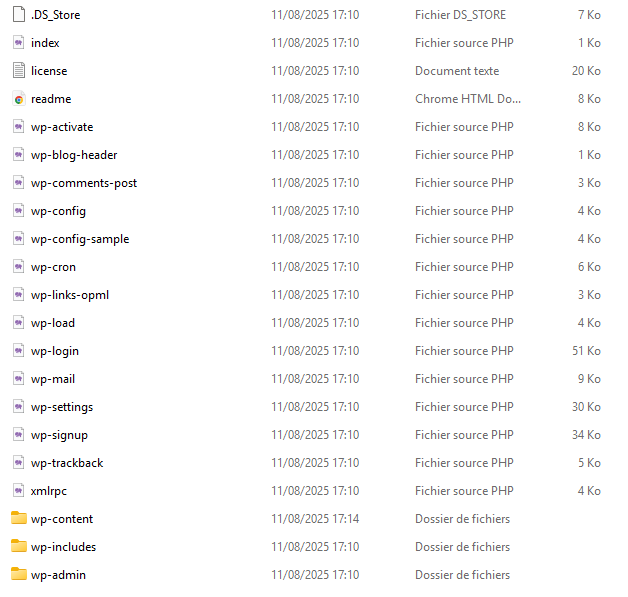
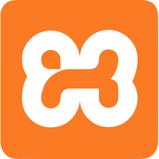
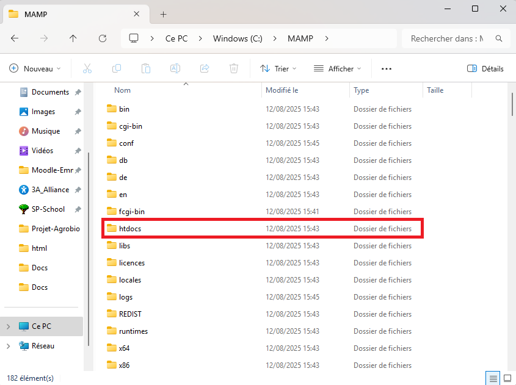
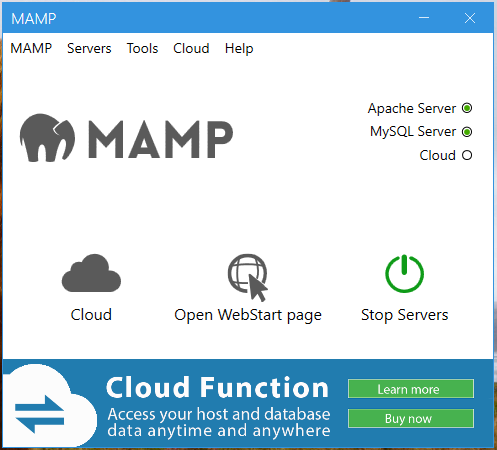
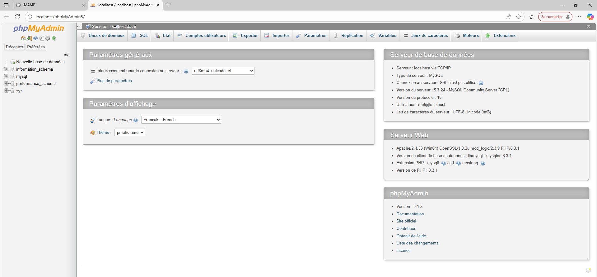

Post-Wordpress#
Introduction#
Pendant la formation#
Note
Explication de ce qu’on a fait jusque là:
hébergement
GUI wordpress (travail en ligne sur l’interface wordpress)
…
Et après ?#
Et bien après il va falloir que tu récupère le fruit de ton dur labeur, car nous nous devons acceuillir une nouvelle cohorte d’apprenants et on va donc utiliser les hébergements de vos sites pour eux. A la fin de vos examens nous exportons les fichiers de vos site et les stockons dans un disque dur.
Note
Ca pourrait être intéréssant de faire faire la manip par les apprenants eux même.
Récupérer les fichiers, c’est bien mais il faut pouvoir reconstruire le site (avec ou sans wordpress), dans l’optique de pouvoir le retravailler ou de le valoriser pour la suite de votre parcours professionel.
2 Solutions
Export et travail en local
Solution gratuite
Un peu technique à mettre en place
Transfert vers hébergement perso
Solution payante
Nécéssite l’achat d’un nom de domaine et d’une soltion d’hébergement
Moins compliqué
Export#
Solution gratuite (mais plus complexe) pour continuer à travailler sur son site. Vous récupérez les fichiers qui ont été générés par wordpress et vous aurez la maitrise de ce que vous souhaitez en faire. Continuer à travailler dessus ou les mettre entre les mains d’un développeur (ce qui n’est pas votre métier je vous le rappelle).
1. Récupérer les Fichiers#
{kind=link}

Capture d’écran du dossier obtenue à la suite d’un export depuis wordpress#
2. Installer un serveur local#
XAMPP

MAMP
localwp
plus tard
Exemple : MAMP#
Note
J’ai choisi MAMP car je l’ai déja testé par le passé et ça m’avait semblé assé facile (ou en tout cas, j’avais réussi à le faire marcher)
Installation : Personellement j’ai décoché les deux options du début (MAMP Pro et MAMP Viewer).
3. Inclure ton site sur le serveur#
Bien Une fois que tu as installé MAMP, il va falloir que tu le localises dans les dossiers de ton ordinateur. Normalement tu peux sélectionner un dossier spécifique pendant l’installation, mais personnes ne fait vraiment attention … Il se situe doc probablement à la racine de ton ordinateur c’est a dire dans le dossier :C/ . Le dossier devrait simplement s’appeler MAMP et devrait être organisé comme sur la
{kind=link}

Capture d’écran de l’interface MAMP lorsque l’on clique sur l’icone présente sur e bureau#
4. Lancer le serveur#
{kind=link}

Capture d’écran de l’interface MAMP lorsque l’on clique sur l’icone présente sur le bureau#
5. Ouvrir PHPMYADMIN#
Note
Image de l’interface
Expliquer les différentes sections …
{kind=link}

Capture d’écran de l’interface MAMP lorsque l’on clique sur l’icone présente sur le bureau#
6. Importer la BDD#
BDD ca veut dire base de donnée.
7. Configure Wordpress#
Localise ton fichier wp-config.php dans le dossier qui comprend tout les fichiers de ton site et qui est inclue dans le dossier htdocs. Si tu l’ouvre dans VS-Code il devrait ressembler à l’image présenté à gauche
define('DB_NAME', 'wordpress_local'); // Nom de la base créée
define('DB_USER', 'root'); // Utilisateur MySQL par défaut avec MAMP
define('DB_PASSWORD', 'root'); // Mot de passe par défaut avec MAMP
define('DB_HOST', 'localhost');
8. Visualise ton site#
Une fois ces actions effectués, tu devrais pour visualiser ton site dans ton navigateur. Pour cela :
Vérifie quel port est utilisé par MAMP
Note
Créer un gif pour montrer les différentes étapes
Transfert FTP#
Fait partie des choses à savoir faire selon le référentiel (🎓 Animations Vidéo)
Note
Demander une note à Grégoire ou créer du contenue pédagogique approprié